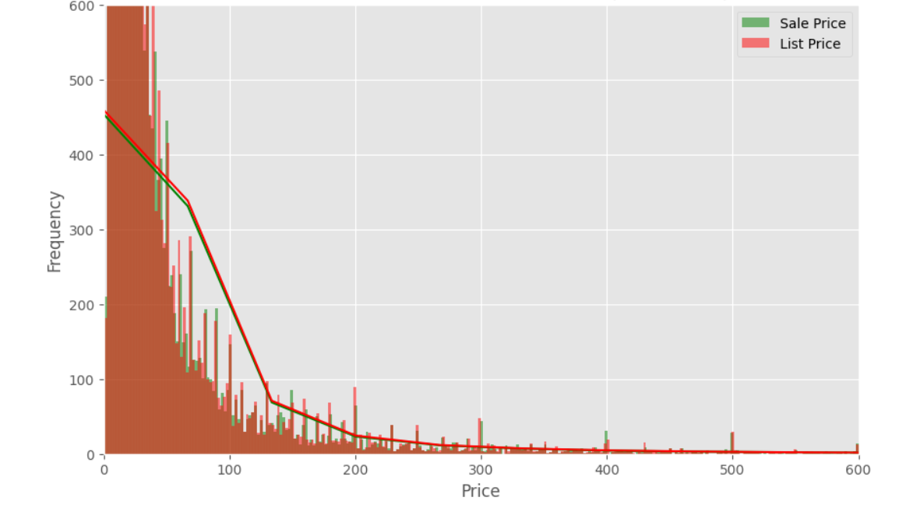
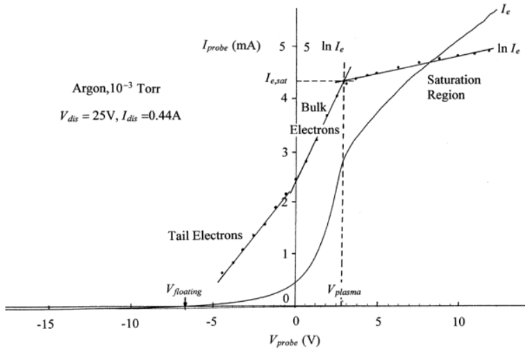
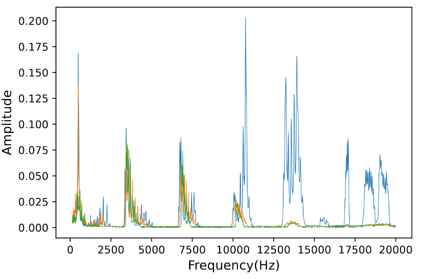
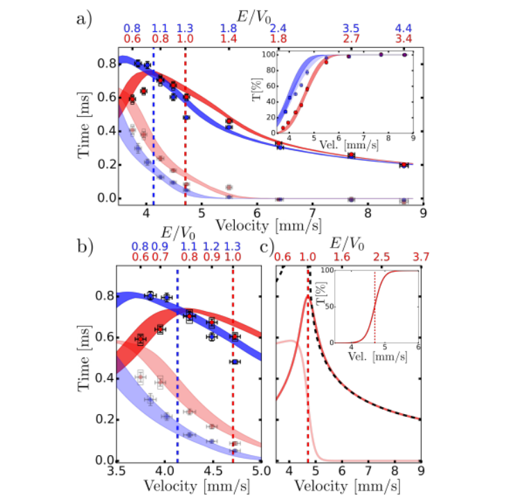

Analysis applied to Walmart's pricing dynamics and product availability, with a keen focus on category-based insights. Employing systematic categorization within distinct price brackets, to unravel patterns governing discount distribution over diverse products.


Plasma, acknowledged as the fourth state of matter, possesses captivating characteristics distinct from solids or gases, making traditional descriptors like mass or pressure inadequate. This project employs data analytics to explore measurable plasma statistics, seeking parameters that effectively characterize this unique state.

The exploration of sound waves in a tube, akin to the wave equation of a Quantum Particle and standing waves in a one-dimensional solid. Through a systematic study of sound wave characteristics, data analytics techniques are employed to extract meaningful insights and measurements.

In this project, we delved into renowned papers and experiments, exploring approaches to ascertain the tunneling time of quantum particles.
Beatrice Tinsley, an astrophysicist who has made groundbreaking contributions to the field, despite facing societal barriers for women in science.